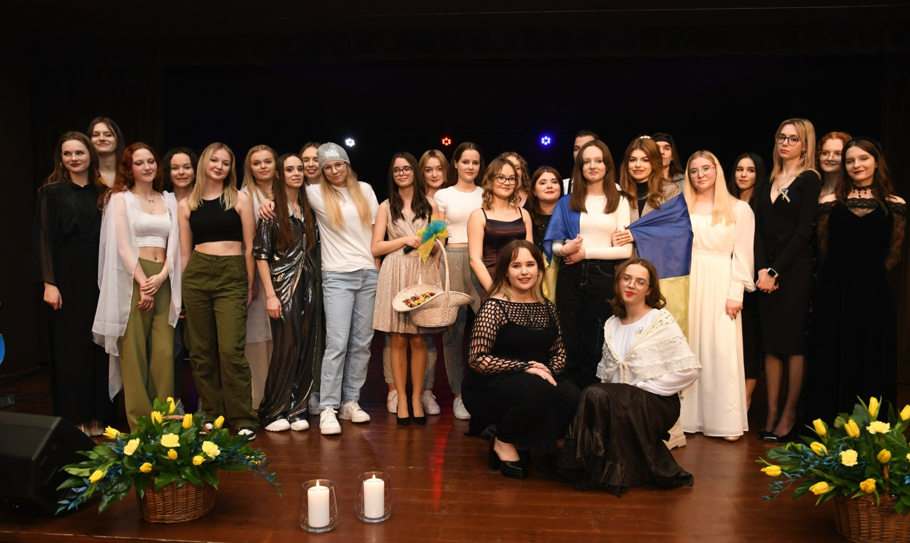

Wiemy, że każdy z Was jest inny, ma inne zdolności, zainteresowania i ambicje, dlatego rozważcie składaną przez nas propozycję. Nauczyciele pracujący w I LO mają dużą wiedzę i długoletnie doświadczenie, są otwarci i życzliwi, gotowi pomóc w każdej sytuacji, potrafią dostrzec Wasze trudności i docenić Wasze starania. Służą Wam pomocą w rozwijaniu waszych zainteresowań i pasji oraz osiąganiu życiowych celów. Starają się zapewnić atmosferę bezpieczeństwa, życzliwości i akceptacji. W naszej szkole wszyscy się znają i otaczają wzajemnym szacunkiem. Każdy uczeń ma prawo głosu, każdy może swobodnie wyrażać swoje poglądy, każdy ma szanse wykazać się swoimi zdolnościami, dlatego każdego traktujemy indywidualnie.
Znajdź nas na mapie!Po czterech latach przerwy, w jubileuszowym roku 150 – lecia istnienia I LO w Brodnicy, odbył się w naszej szkole ósmy koncert z cyklu Moc Muzyki. Tym razem koncert został poświęcony wsparciu pogrążonej w wojnie Ukrainie. Celem artystów było oddanie hołdu walczącemu narodowi i pokrzepienie naszych przyjaciół, którzy zamieszkują w Brodnicy i jej okolicach. W repertuarze znalazły się piosenki polskie i ukraińskie, śpiewane przez uczniów pochodzących z obu krajów oraz przez absolwentów szkoły. Prezentowane utwory dotykały tematu wojny, nadziei, tęsknoty oraz kultury ludowej Ukrainy.
